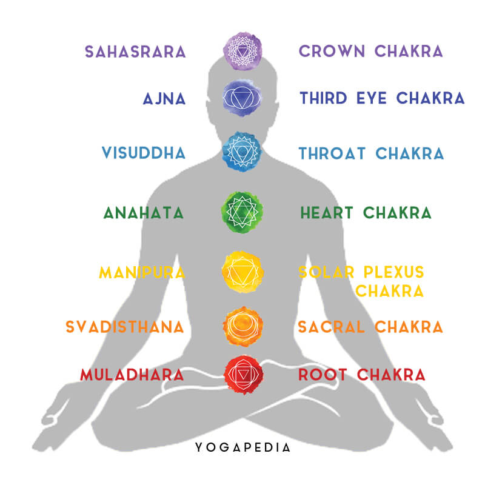

Section Practice

These are the 7 Chakras. In Sanskrit, Chakra literally translates to "wheel" or "disk" and refers to the energy centers in our bodies which have the loving responsibility of taking in, incorporating, and emanating energy to keep us functioning at optimal levels.
This is a soundtrack that can be used for meditation that specifically works and balances our Chakras.